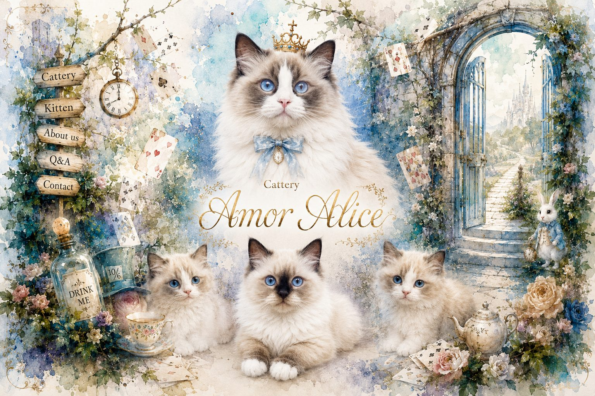
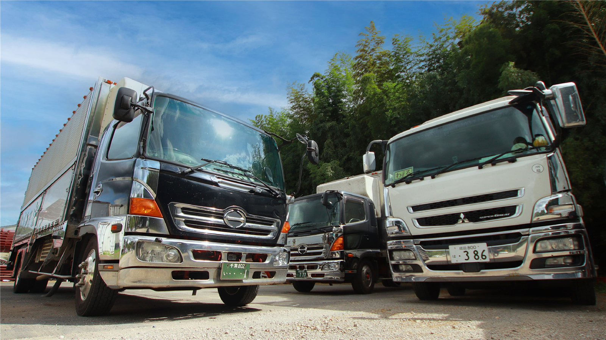

相談内容を送る
ホームページ、DX・AI、Webアプリ、運用サポートなど、分かる範囲の言葉で送れます。
受付中Part 01 / Homepage Production
まずは事業の入口になるホームページを整えます。新規制作、リニューアル、料金、公開までの流れを先に見せて、 「何を頼めばいいか」を判断しやすくします。
Homepage Build Cases
前半では、公開中のホームページ制作事例を3件紹介します。見た目だけでなく、何を整理して問い合わせや予約につなげたかを確認できます。

世界観、見学相談、予約導線までを一体で整えたブランド体験型のホームページ事例です。

物流の現場力を、問い合わせ・採用・業務改善につながる入口として整理した会社サイトです。
理念、業務内容、施工実績、求人、代表メッセージを相談導線へまとめた会社サイトです。
Homepage Production Links
できること、料金、制作の流れ、考え方を先に確認できます。ここまでが、ホームページ制作を決めるための前半パートです。
Part 02 / Business DX
ホームページはゴールではなく、事業の入口です。問い合わせ、予約、採用、更新、集計など、 公開後に発生する業務の流れを整理し、小さな改善からDX・AI活用へ育てます。
Contact / Start Here
ホームページ、DX・AI、Webアプリ、運用サポート、まだ名前のない相談まで。 制作プランや依頼内容が決まっていなくても大丈夫です。分かる範囲で送ってください。
ホームページ、DX・AI、Webアプリ、運用サポートなど、分かる範囲の言葉で送れます。
受付中目的、予算、今の困りごとを見て、制作・改善の入口を整理します。
整理最初に確認したいこと、合いそうな制作範囲、進め方の候補を返します。
返信現在はフォーム受付を優先しています。公式LINEは準備中のため、接続後に案内を追加します。